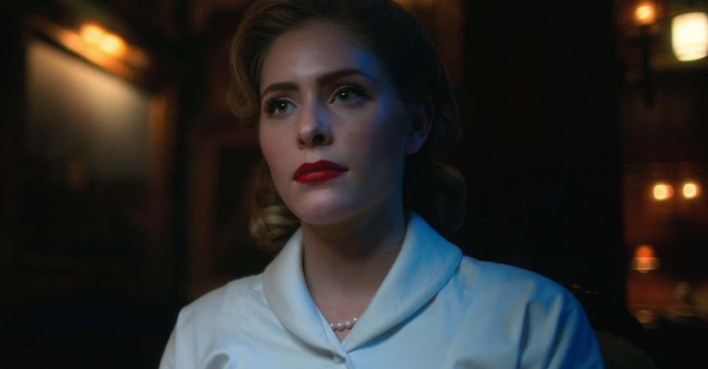
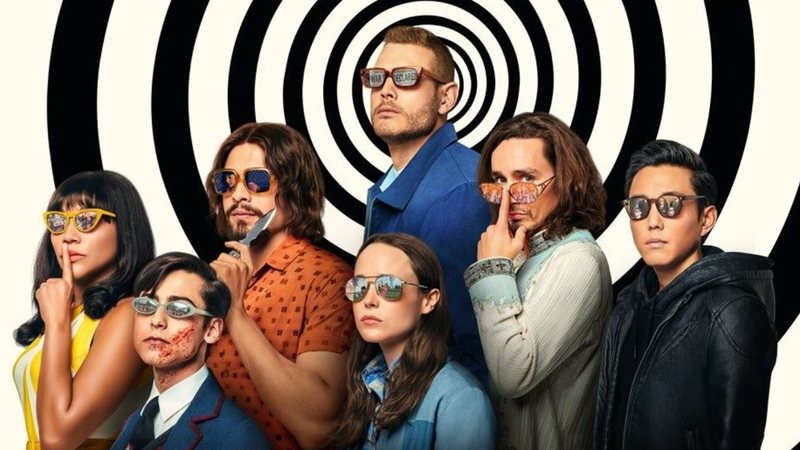

42 mulheres ao redor do mundo deram a luz simultâneamente, apesar de nenhuma delas mostrar qualquer tipo de sinal de gravidez até o início do trabalho de parto, no dia 1 de outubro de 1989.
Sete das crianças são adotadas pelo excêntrico bilionário Sir Reginald Hargreeves:
As crianças são transformadas em uma equipe de super-heróis que ele chama de "Umbrella Academy". Hargreeves dá aos filhos números em vez de nomes, mas eles eventualmente são nomeados por sua mãe robô, Grace:
Os 7 são chamados de:
- Número 1: Luther
- Número 2: Diego
- Número 3: Alisson
- Número 4: Klaus
- Número 5: Five/Cinco
- Número 6: Ben
- Número 7: Vanya
E essa, é a Umbrella Academy!
